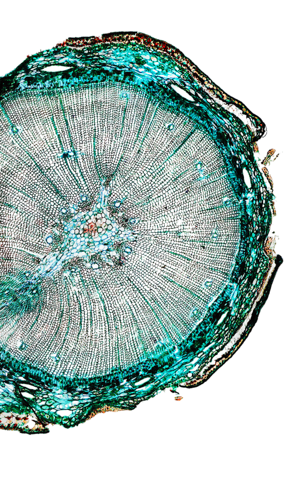

About & Approach
Inspired by years of bio-lab research, I have come to admire the intelligence of nature’s design.
Like a cell perfectly tuned not only to its internal mechanisms and its neighbouring cells, but also to the signals of a wider body that interacts with its surrounding world, a good digital experience is not simply a well-made interface. It is shaped by and adaptable to the people who use it, the context in which they encounter it, the systems around it, and the purpose it is meant to serve.
Good design is adaptable
to the environment it
lives in.
Academic Research
Academic research shaped my curiosity, taught me to ask the right questions, and provided me with the framework through which to analyze results.
UI/UX Design
Design thinking channeled my creativity and gave me the methods and constraints to turn ideas into prototypes — and to involve people in shaping the outcome.
Classical Drawing
Classical drawing challenged me to confront prior mental constructs and learn to see again, focusing on what is actually there.
My approach draws upon all three facets above: beginning with a deconstruction of preconceptions, it gives space for the research and people, discovering the organic connections needed to create something meaningful and practical.
Connection-Centered Digital Design
Connection-centered digital design begins with investigating the relationships within the ecosystem of people, needs, systems, behaviours, and expectations that surround the project.
The goal is not simply to make an interface work, but to create the right connections so that the resulting experience has a meaningful place and a practical application within the world it serves.